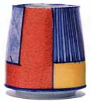
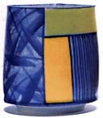
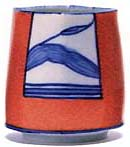
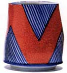
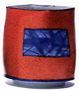

| Kevin White
East meets West
Kevin
White was born in England in 1954. He studied art and ceramics
at various institutes between 1973-1979, after which he became a
ceramics research student at Kyoto City University of Fine Arts,
Japan, studying under the late Professor Yutaka Kondo. From 1980-83
White worked in Kyoto in the studio of Mr. Satoshi Sato, who was
a member of the avant-garde ceramic group 'Sodeisha'.
After completing post-graduate studies at the Royal College of Art,
London in 1985, White migrated to Australia on a permanent basis.
He now lives and works in Melbourne, where he is Course Coordinator
of the ceramics department at RMIT
University.
Kevin
White's works are influenced by his experiences in Japan, where
he learnt the technique of onglaze decoration. Since then he has
developed his particular style, which takes elements from Japanese
art & design, and melds them with western influences and designs
of his own imagination. His fine porcelain vessels are wheel thrown
and altered. The initial design is painted in underglaze blue, then
glazed with a clear glaze. After this, color in the form of onglazes
is added and fired on in a third firing.
White's works have received critical acclaim acclaim
around the world and may be found in numerous publications on ceramics
as well as public collections including Gifu Prefectural Ceramic
Museum, Japan, Royal College of Art, London, UK and the Powerhouse
Museum, Sydney, Australia, to name a few.

More Articles
More Artists of the Week
|